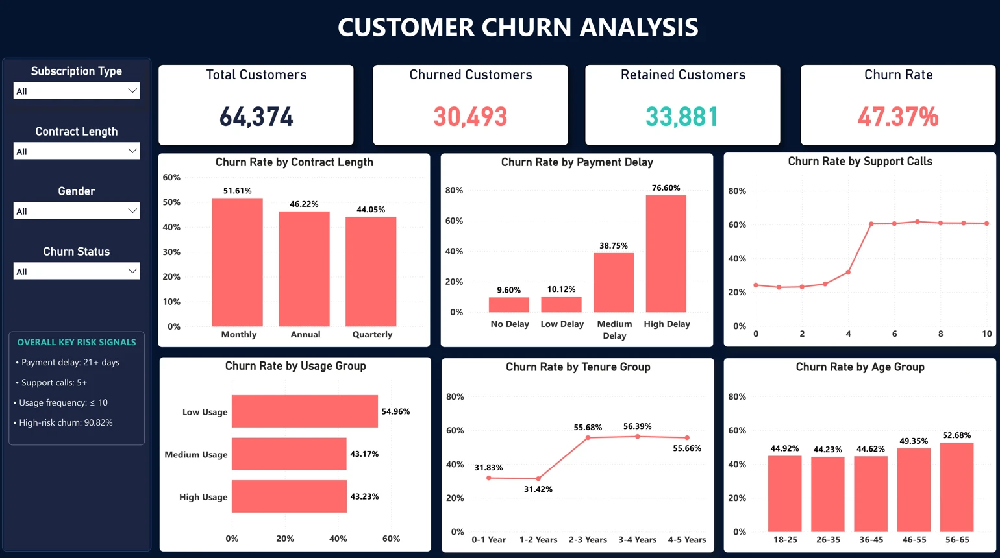
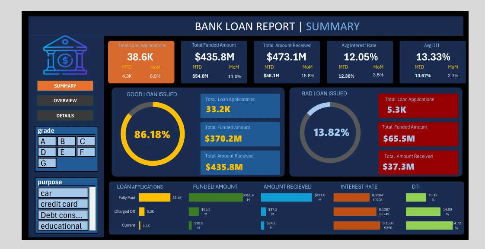
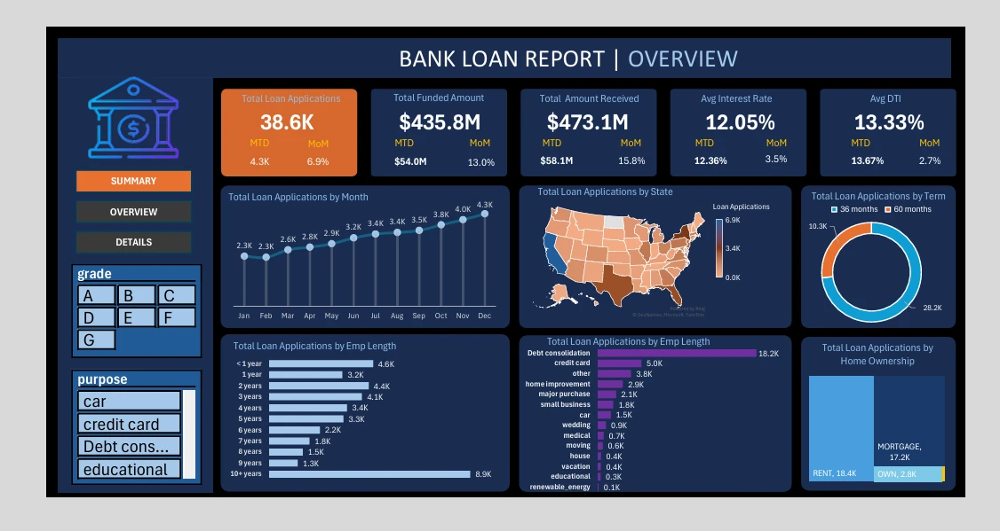
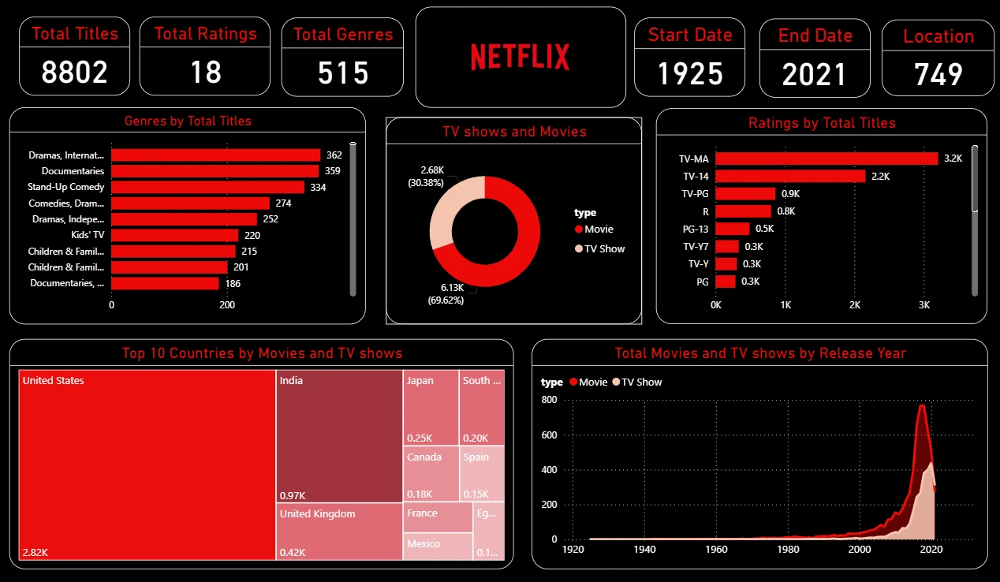

Reporting & BI
Microsoft Excel (PivotTables, VLOOKUP, formulas, KPI/MIS reporting), Power BI (DAX, dashboards), Tableau
Data Analyst · Thanjavur, Tamil Nadu
I’m Jaganathan S, an entry-level data analyst. I turn raw datasets into reliable analysis, clear dashboards, and useful business recommendations.
I hold a B.Sc. in Artificial Intelligence and have hands-on project experience in data cleaning, validation, ETL-style workflows, KPI/MIS reporting, and dashboard development. My work includes reusable Python cleaning workflows and analysis of datasets with more than 64,000 records.
Microsoft Excel (PivotTables, VLOOKUP, formulas, KPI/MIS reporting), Power BI (DAX, dashboards), Tableau
MySQL and SQL (joins, aggregations, subqueries, CTEs, window functions), Python (Pandas, NumPy), ETL concepts
Data cleaning, validation, preprocessing, trend analysis, Python automation and data pipelines, data visualization
Mean, median, percentages, correlation
My résumé presents hands-on project work in data analytics. Explore the projects below for the workflows, reports, and findings I have built.
Explore project work →Showing 4 projects
Prepared and validated 64,374 subscription-customer records with Python/Pandas. Analyzed churn across payment delays, support calls, usage, contracts, tenure, age, and spend; identified a 5,992-customer high-risk segment with a 90.82% churn rate.
Built an interactive Power BI dashboard with DAX KPIs and slicers. The findings informed recommendations for payment reminders, support escalation, and low-usage engagement.

View full-size dashboard ↗Built a modular Python pipeline that extracts raw CSV files, applies reusable cleaning and validation functions across orders, customers, order items, payments, products, and related tables, then loads cleaned outputs.
Automated date and type conversions, missing-value and quality checks, text standardization, derived fields, and CSV exports.
Developed Overview and Summary dashboards with KPI cards for applications, funded amount, amount received, average interest rate, and average DTI.
Used PivotTables and formulas to analyze loan status, monthly trends, state, term, and home ownership.

View full-size dashboard ↗
View full-size dashboard ↗Explored 8,802 titles across movies and TV shows. The dashboard compares genres, content ratings, countries, and release-year trends.

View full-size dashboard ↗Periyar Maniammai Institute of Science and Technology (PMIST), Thanjavur
2022–2025 · CGPA 7.48
Nav Bharat Matriculation Higher Secondary School
HSC · 67% · 2022
SSLC · 62% · 2020
Forage · Aug 2026
Practical tasks in data analysis and forensic technology
Data Analytics Course — NoviTech · Nov 2025
HackerRank SQL (Basic)
HackerRank Python (Basic)